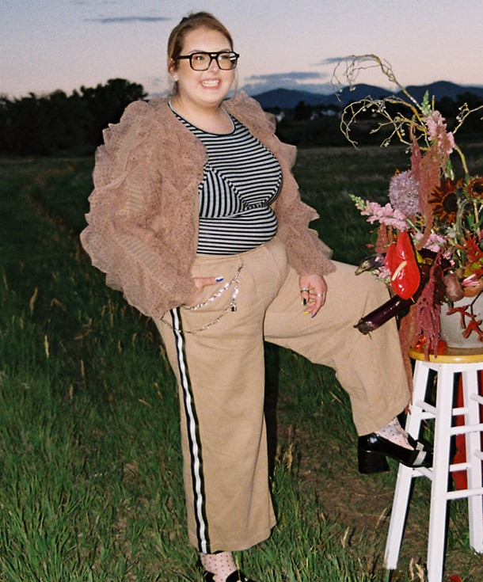
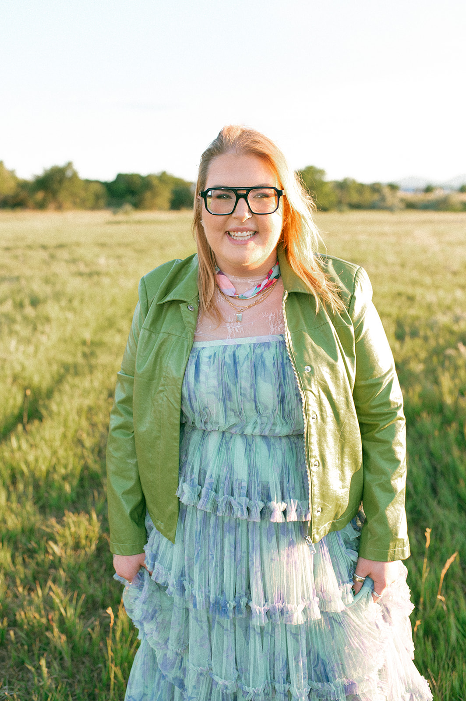
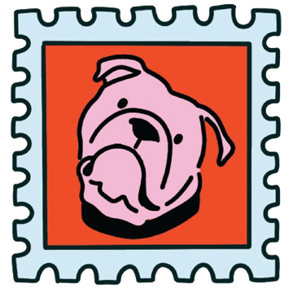

Hello, I'm Molly.
I'm a J.D. candidate at the University of Denver Sturm College of Law, graduating in December 2026, where my work centers on civil rights and criminal legal reform.
My path to law took me through paralegal and legal assistant roles in Big Law and boutique firms in Washington, D.C., where I built deep experience supporting civil rights class actions and working with incarcerated individuals. I also serve as Assistant Director of Juvenile-In-Justice, documenting the lives of currently and formerly incarcerated individuals through photography and narrative.
In addition to my justice-oriented work, I've long been engaged with creatives—working alongside them in their story development, social media campaigns, branding implementation, event planning and design, and all else. I offer a wide range of skills—research, writing, interviewing, and careful craft—to creatives and mission-driven organizations who need a steady hand.


I grew up in Vermont, where winters were cold, summers meant picking blueberries, and early springs were filled with the love of real maple syrup. I've since called Washington, D.C., and Denver, Colorado home, and now share my life with an English Bulldog named Basil and three cats — Eloise, Lemon, and Clementine.
Outside of work, I'm drawn to making things with my hands, whether it is through jewelry making, silversmithing, floral design, or needlepoint, which are regular pastimes. I'm especially energized by fellow creatives and mission-driven people who care as much about the why behind their work as the work itself.


